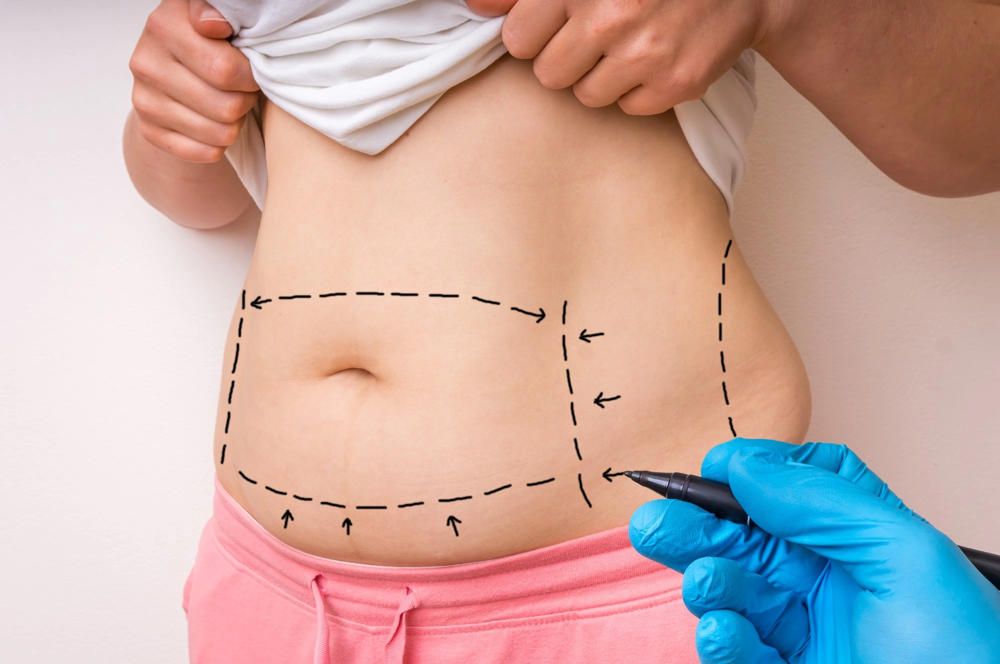

Bariatric surgery has become a transformative solution for individuals struggling with obesity and its related health conditions. However, one of the most common questions patients have before making the decision is: “How long does bariatric surgery last?” Closely followed by, “How long does it take to get bariatric surgery?” These questions address both the duration of the surgery itself and the entire treatment journey, from consultation to recovery.
If you’re considering Bariatric Surgery in Delhi with an expert like Dr. Atul Peters, understanding the timeline and longevity of the procedure can help you prepare both mentally and physically.
What is Bariatric Surgery?
Bariatric surgery, often referred to as weight-loss surgery, is a group of medical procedures designed to help individuals struggling with obesity achieve significant and sustained weight loss. This form of surgery works by making changes to the digestive system, either by reducing the size of the stomach, rerouting the small intestine, or both. These changes lead to reduced calorie intake, hormonal shifts, and improved satiety. The most common types include:
- Gastric Bypass (Roux-en-Y)
- Sleeve Gastrectomy
- Adjustable Gastric Banding
- Biliopancreatic Diversion with Duodenal Switch (BPD/DS)
These procedures restrict the amount of food the stomach can hold, reduce calorie absorption, or both. Bariatric surgery is typically recommended for people with a BMI of 35 or more, especially when obesity-related conditions like type 2 diabetes, hypertension, or sleep apnea are present.
How Long Does It Take to Get Bariatric Surgery?
Patients often ask, “How long does it take to get bariatric surgery?”—and the answer involves more than just scheduling an operation. The entire process typically spans from 2 weeks to 3 months, depending on the facility, the patient’s health, and the preparation required. Here’s how that timeline breaks down:
a) Initial Consultation and Medical Evaluation
The journey begins with a thorough consultation with a bariatric surgeon. During this visit, your body mass index (BMI), health history, weight-loss history, and lifestyle factors are evaluated. If you meet the criteria, you’ll be recommended for further testing and a multidisciplinary review.
b) Diagnostic Tests and Referrals
Next, you’ll undergo several tests such as blood panels, ECG, chest X-rays, ultrasound scans, and possibly an upper GI endoscopy. If you have pre-existing health issues like diabetes or heart disease, you may be referred to specialists to ensure you’re fit for surgery.
c) Psychological and Nutritional Assessments
Bariatric surgery is as much a psychological journey as a physical one. A clinical psychologist will assess your mental preparedness and ability to commit to post-surgery changes. A dietitian will also guide you through nutritional modifications both pre- and post-surgery.
d) Insurance Authorization and Scheduling
If you’re going through insurance, this step can add time to the process. Approvals can take several weeks, depending on the provider. However, many hospitals offering Bariatric Surgery in Delhi, including those under Dr. Atul Peters, provide package-based services that eliminate insurance delays, reducing the waiting period significantly.
What Happens Before the Surgery?

Once you’re cleared for surgery, your preparation doesn’t stop there. This stage is critical for improving surgical outcomes and ensuring long-term success. Patients often wonder how long it takes to get bariatric surgery, but this preoperative phase is just as important as the procedure itself.
a) The Preoperative Diet
You’ll likely begin a special low-calorie, high-protein diet about 1–2 weeks before your surgery. This helps reduce liver size and fat around internal organs, making the surgery safer and reducing the risk of complications. The pre-op diet typically includes:
- Protein shakes
- Broths and clear soups
- Low-starch vegetables
- Plenty of water
- No sugar, alcohol, or fried foods
b) Medical Clearance and Anesthesia Review
You’ll meet with the anesthesiologist before your surgery to ensure you are ready for general anesthesia. They’ll review your test results, ask about medication usage, and provide fasting instructions for the night before surgery.
c) Emotional and Lifestyle Preparation
Mental preparation is just as critical. Surgeons like Dr. Atul Peters emphasize counseling to ensure patients understand the dietary restrictions, possible lifestyle changes, and long-term commitment required after surgery. Patients are also encouraged to begin walking regularly and stop smoking (if applicable) before the procedure.
What Happens During the Surgery?
When discussing “how long does bariatric surgery last”, it’s important to understand what happens in the operating room. The surgery involves several stages, each carefully executed to ensure safety and success.
a. Arrival and Anesthesia
On the day of your surgery, you’ll arrive at the hospital a few hours before the scheduled time. After registration, you’ll meet your anesthesiologist, who will administer general anesthesia. This ensures that you remain asleep and pain-free throughout the procedure.
b. Surgical Procedure Begins
Once the anesthesia has taken effect, the surgeon begins the procedure. In modern medical settings—especially under skilled professionals like Dr. Atul Peters—the surgery is performed laparoscopically. This involves making small incisions and using a camera (laparoscope) to guide the tools inside the abdomen.
c. Type of Bariatric Procedure
The duration of surgery depends on the specific type of bariatric operation:
- In sleeve gastrectomy, about 75–80% of the stomach is removed, leaving a tube-shaped stomach.
- In a gastric bypass, the stomach is divided and rerouted to the small intestine.
- Adjustable gastric banding involves placing a band around the upper part of the stomach.
Though the actual surgical time may last between 60 minutes to 3 hours, the entire process, including prep and recovery, might take longer.
d. Waking Up from Surgery
Once the surgery is completed, you’ll be moved to the recovery room where the medical team will monitor your vital signs as you awaken from anesthesia. Many patients feel groggy but don’t usually experience pain, as pain management medications are administered early.
Immediate Post-Surgical Recovery and Hospital Stay
After the surgery is complete, the recovery process begins right away, starting with your time in the hospital. This phase is critical in determining how well your body responds to the procedure and how quickly you can resume basic activities. When discussing how long does bariatric surgery lasts, it’s important to recognize that recovery isn’t just physical healing—it’s also the beginning of a lifelong transformation.
a) Duration of Hospital Stay
Most bariatric surgeries are now performed laparoscopically, which means smaller incisions and a quicker recovery. As a result, the average hospital stay is relatively short, typically 2 to 3 days. Some patients may be discharged within 24 to 48 hours after surgery, particularly after sleeve gastrectomy or adjustable gastric banding. However, more complex procedures like gastric bypass or BPD/DS may require a slightly longer stay.
During this time, your vital signs will be closely monitored, and you’ll begin a gradual reintroduction of fluids under medical supervision. The medical team will also ensure there are no signs of complications such as bleeding, leakage from the staple line, infection, or respiratory issues.
b) Pain Management and Mobility
Postoperative pain is usually minimal and manageable with prescribed medications. Because the procedure is done with small incisions, most patients experience mild discomfort rather than intense pain. You’ll be encouraged to start moving and walking within 6 to 8 hours after surgery, as early movement helps prevent blood clots, improves circulation, and speeds up healing.
It’s common to feel tired and weak during the first day or two. Medical staff will guide you on how to get out of bed, move safely, and perform breathing exercises to reduce the risk of lung complications.
c) Liquid Diet Initiation
The first step in your new dietary plan begins in the hospital. You will start with small sips of clear liquids—water, broth, and electrolyte drinks. If your body tolerates these well, you may move on to full liquids by the time you’re discharged. This gradual reintroduction helps your digestive system adjust and ensures that the surgical site inside your stomach remains stable.
d) Monitoring for Complications
Although bariatric surgery is safe when performed by experienced surgeons like Dr. Atul Peters, monitoring in the first 48 hours is crucial. Nurses and doctors will check for:
- Internal bleeding
- Leakage from staple or suture lines
- Signs of infection at incision sites
- Breathing or heart issues
- Dehydration or electrolyte imbalance
Patients who follow post-op instructions and communicate openly with their care team are more likely to avoid complications and experience smoother recoveries. This period also allows the hospital staff to educate patients on their discharge plan, including medications, wound care, and dietary guidelines.
Expert Bariatric Surgery by Dr. Atul Peters!
Contact Now!
Book Your Appointment
How Long Does Bariatric Surgery Last in Terms of Effectiveness?
Understanding the long-term effectiveness of bariatric surgery is crucial for anyone considering this life-changing procedure. When someone asks how long does bariatric surgery lasts, they are not only inquiring about surgical duration but also about how long the benefits—like weight loss and disease remission—can last. The answer depends on a combination of surgical technique, lifestyle commitment, and post-op follow-up.
a) Weight Loss Outcomes Over Time
Most patients begin losing weight within the first few days after surgery. By the end of the first year, individuals typically lose 60–80% of their excess weight, depending on the type of procedure. Gastric bypass and sleeve gastrectomy tend to deliver the most dramatic results.
The majority of weight loss occurs in the first 12–18 months, after which weight begins to stabilize. If patients maintain a high-protein, low-sugar diet and remain physically active, the weight loss can be sustained for 10 years or more.
b) Improvement in Obesity-Related Conditions
One of the most important benefits of bariatric surgery is its ability to resolve or improve chronic health issues. Many patients experience long-term relief from:
- Type 2 diabetes (often within weeks of surgery)
- High blood pressure
- High cholesterol
- Sleep apnea
- Joint pain and mobility issues
c) Long-Term Commitment Determines Longevity
While the physical effects of bariatric surgery can last a lifetime, they are not immune to reversal if patients fall back into unhealthy habits. Weight regain is possible, especially if patients consume calorie-dense, low-nutrition foods or fail to stay active. The good news is that even in cases of mild weight regain, the risk of developing chronic diseases remains lower than before surgery.
Factors That Influence Surgical Success
The question “how long does bariatric surgery last” in terms of results depends heavily on multiple individual and clinical factors. While the surgery itself is a powerful tool, long-term success hinges on the patient’s consistency, lifestyle, and support system.
a) Type of Procedure Chosen
Different bariatric procedures have different outcomes in terms of weight loss, risk of complications, and long-term sustainability. For instance, gastric bypass often leads to greater and faster weight loss than gastric banding but may come with a higher risk of nutritional deficiencies. Sleeve gastrectomy strikes a balance and is one of the most commonly performed procedures today due to its safety and effectiveness.
b) Adherence to Diet and Physical Activity
The most critical factor in ensuring your surgery’s success over the long term is how committed you are to making permanent changes in your eating and activity habits. Patients who follow a high-protein, low-carb diet with portion control and regular physical activity maintain their weight loss and health improvements for years.
c) Regular Follow-Up and Support
Routine check-ups after surgery are essential to monitor weight loss, adjust nutritional supplements, track vitamin levels, and screen for any complications. These appointments also offer a chance to work with your medical team to stay on track emotionally and physically.
Final Thoughts
The journey through bariatric surgery is not just about a few hours in the operating room. When asking how long bariatric surgery lasts, patients must consider both the duration of the procedure and the long-lasting impact it can have on health and quality of life.
For those considering Bariatric Surgery in Delhi, working with experienced and reputable surgeons like Dr. Atul Peters ensures not only a safe surgery but also an integrated care plan that supports long-term success. With the right mindset, support, and follow-through, bariatric surgery can be the beginning of a healthier, more fulfilling life.
10. Frequently Asked Questions (FAQs)
Q1: How long does bariatric surgery last during the operation?
The actual surgery usually lasts 1 to 3 hours, depending on the procedure type and whether it’s done laparoscopically or robotically.
Q2: How long does it take to get bariatric surgery after the first consultation?
Generally, it takes 2 to 12 weeks. This includes diagnostic tests, specialist clearances, nutritional and psychological assessments, and possibly insurance approvals.
Q3: Will I lose weight right after surgery?
Yes. Most patients start losing weight immediately. The most rapid weight loss happens within the first 6 months, and major weight loss typically occurs over 12 to 18 months.
Q4: How long do the effects of bariatric surgery last?
With proper diet, lifestyle, and follow-up, the effects of bariatric surgery can last 10 years or more. Many patients maintain 60–80% of their weight loss over the long term.
Q5: Can the stomach stretch after surgery?
Yes, the stomach can gradually stretch over time, especially if large portions of food are consumed. However, this can be prevented with mindful eating and portion control.
Q6: How long will I need to take supplements?
For most patients, lifelong vitamin and mineral supplementation is necessary, especially after gastric bypass or biliopancreatic diversion, to prevent deficiencies.
Q7: What if I regain weight?
Weight regain happens in a small percentage of patients and can usually be managed through renewed diet and lifestyle modifications. In rare cases, revision surgery may be considered.
Recommended Further Reading
Have Personal Health Questions?
Consult with Dr. Atul Peters and our expert multidisciplinary team at Max Smart Super Speciality Hospital, Saket, New Delhi.
Book Your Consultation